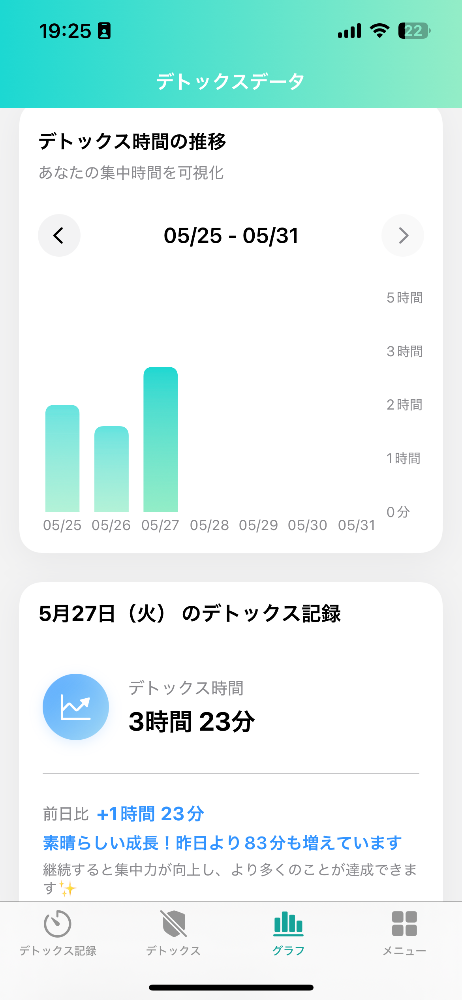

スマホに時間を奪われていませんか？
気づけばSNSや通知に時間を浪費し、本当にやりたいことに集中できない... そんな経験はありませんか？ 現代のデジタル環境は、私たちの貴重な時間と集中力を容赦なく奪います。
detoxが、その問題を解決します。
detoxは、計画的なデジタルデトックスをサポートし、あなたが自身の時間をコントロールし、集中力を高め、目標達成へと着実に進むためのツールです。
アプリの主要機能
計画的なデトックス時間
スクリーンタイムAPIを活用し、特定の時間帯や期間、スマホの利用をブロック。集中したい時間や休息時間を意図的に作り出せます。
デトックス中の活動ログ
デトックス中に何をしたかを簡単に記録。読書、運動、内省など、充実した時間の使い方を意識し、振り返りに役立てます。
活動をタグで分類
記録した活動に「#読書」「#学習」「#運動」などのタグを付けて分類。どんな活動に時間を費やしているか、傾向を分析できます。
日々の成果をカレンダーで
デトックス時間や活動記録をカレンダー形式で視覚化。日々の積み重ねや継続性が「ヒートマップ」のように色で分かり、モチベーション維持に繋がります。
detoxで変わる、あなたの毎日
時間をコントロールする
受動的なデジタル消費から脱却し、自分の意思で時間をデザイン。本当に価値ある活動に時間を費やせるようになります。
深い集中を手に入れる
デジタルノイズを遮断し、目の前のタスクに没頭できる環境を実現。学習、仕事、創造活動の質を高めます。
行動を可視化し成長する
デトックス時間や活動を記録・分析することで、自分の傾向を理解。より良い時間の使い方を見つけ、継続的な自己成長に繋げます。
detoxを使うことで得られるメリット
- 集中力が向上し、生産性がアップします。
- スマホに奪われていた時間を有効に活用できます。
- 自分の時間の使い方を深く理解できます。
- デジタルストレスが軽減され、心にゆとりが生まれます。
- 読書や運動、大切な人との時間など、充実した活動が増えます。
- 日々の小さな成功体験が、自己肯定感を高めます。
detoxの活用例
学習・読書に集中
通知を遮断し、資格試験の勉強や読書に没頭。深い集中で効率的にスキルアップを目指せます。
健康的な習慣作り
ランニング中やヨガの間はデトックス。運動に集中したり、瞑想で心を整えたり、心身のリフレッシュに。
大切な人との時間
家族や友人との食事中、会話中はスマホをオフ。目の前の人との繋がりを大切にし、より豊かなコミュニケーションを。
あなたの自由な時間を、detoxでもっと有意義に。